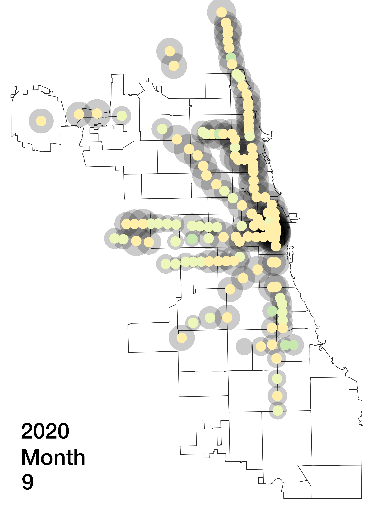

ELI HARRELL
Environmental Research Group
computer ~ 2D projects.
I contributed these spatial analyses to the Environmental Research Group's whitepapers for 2020 and 2021.
click images to view them at full size.
|
Autumn 2021 ~ In this analysis, I sought to answer the question: Are Chicago's parks where they should be? This map visualizes each the "service area" of each of Chicago's hundreds of parks. I defined these areas as those for which a given park is the closest park; in other words, if you wanted to go to a park from a given block, which park would you go to? I found that the Southwest and West Sides of the city have the most overburdened parks, meaning they are the closest park for a disproportionately population. Three on the Southwest Side are the closest for more than 18,000 people, while most near the lake are shared by under 2,000. |

|
|
Autumn 2020 ~ In this analysis, I sought to answer the question: Where, when, and how much did people stop using Chicago's trains in 2020? I approached this question using a counterfactual: what if the pandemic had not happened? Using data (download) from 2013 to 2019, I made a prediction for what the ridership of that station would be in each month of 2020 using a simple linear model. Then, I divided the actual ridership of that station in that month of 2020 by this prediction to obtain the percentage decrease in ridership that "attributable" to the pandemic. The grey circles show the percentage decrease in ridership due to the pandemic (larger = closer to 100% below predicted ridership). The color of the circles represents whether that station had above or below system average ridership in that month of 2020 (bluer = above average, redder = below average). This helps us see which parts of Chicago used or did not use the train disproportionately during the pandemic. It shows us that poorer neighborhoods on the South and West Sides continued taking the train, while wealthier neighborhoods in the North stopped in greater numbers, and earlier in 2020 (before March). |

See an individual month's frame with its link: jan • feb • mar • apr • may • jun • jul • aug • sep |